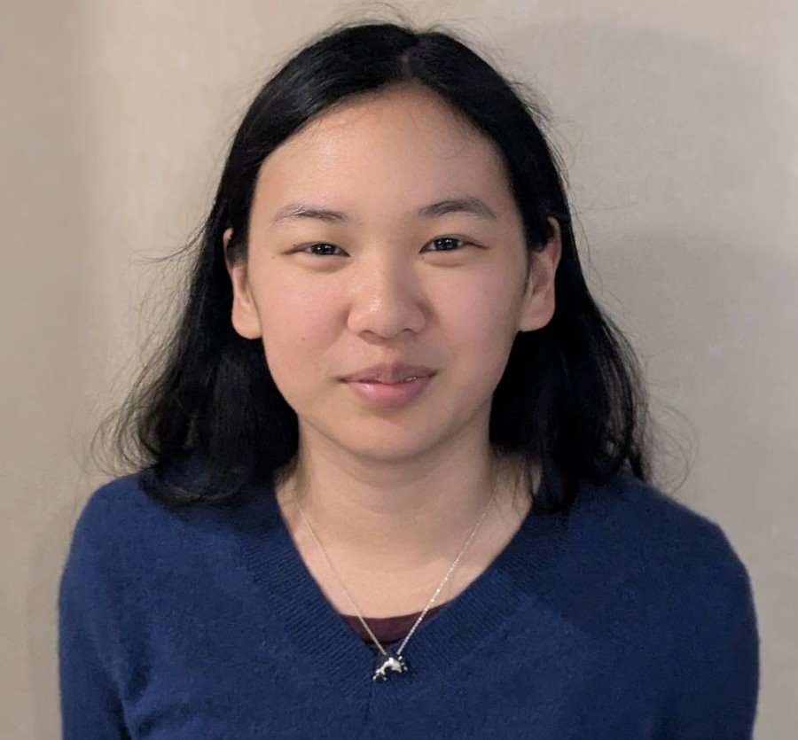

Password protected
Hello! I’m Mika Okamoto, a Computer Science student finishing my B.S. at Georgia Tech this spring. I study explainability for AI systems, specifically, how to make the behavior of large language models and agentic workflows interpretable and actionable for everyone who interacts with them. I am advised by Dr. Mark Riedl in the Entertainment Intelligence Lab.
Over my time at Georgia Tech, I’ve pursued understanding and explaining LLM behavior across many research projects. I’ve built transparent LLM routing systems to better inform developers creating agentic workflows, studied LLM performance and behavior in corporate settings under adversative pressures, and researched how training data contributes to LLM capabilities. This work has led to publications at ACL, MLSys, CHI, and more. I’m also interested in the human dimension of AI, as I focus on human-centered explainability. This includes what it means for a system to be trustworthy to users and how decisions get communicated across audiences with varying levels of expertise in ways that they will easily understand and can act on.
This portfolio covers what I’ve researched and built across my time here, along with how I’ve learned to communicate them across writing, design, and presentation. After graduation, I’ll be joining Decagon, an AI startup where engineers need to understand customer needs and translate them into product features.

I came into this semester with three main goals: designing artifacts that communicate more effectively to targeted audiences, building a faster and more effective process for planning and drafting technical documents, and becoming more persuasive in public speaking. I believe I have grown in all of these across the course, and I will discuss this through the four course outcomes.
Major Project 2, our Technical Crisis Report, helped me improve on my rhetoric and make my messages more persuasive. In that project, I needed to construct a narrative that made the situation and the stakes understandable to our audience. I had to figure out what context to focus on, which stakeholders to tell the story from, and the level of technical details to mention in order to make our story convincing, easy to understand, and easy to process and take away a clear message from. I designed our infographic, and ensured there was enough context for the audience to understand what prediction markets are so that they would be able to fully understand the current risks and important things they could act on now. I used the feedback from our infographic draft to help craft a better final infographic that was aimed at a general public audience who might have heard about prediction markets in the news, but lacked the technical details or knowledge about risks or what they could personally help with. Our presentation and infographic gained the attention of many people in the class, who were very curious to learn more about prediction markets and asked deeper questions than the surface level details we covered in our presentation, which was a clear sign that I had done my job well in catching the layman audience’s attention.
While working on that major project, I’ve also been working on a paper about how the framing of regulatory language and incentives changes AI model behaviors. I’ve had to identify how to frame that project to be understandable from both researchers, who might lack corporate experience of knowledge of how corporate chatbots work, and the general public, who might be concerned about the risks of LLMs but embrace them for their productivity without knowing how they think and behave behind the scenes. I had interesting findings displaying how LLMs break corporate guidelines and rules if they believe it benefits the person talking to them, no matter who they think it might hurt, which I believe is important to get out clearly for researchers to do further research on this topic and corporations to be aware of the risks. I used the rhetoric skills that I’ve learned here to work on writing that paper and framing it through both of these views. It’s been especially helpful in reminding me to read the paper from different mindsets and viewpoints, to see how I come across to different audiences, and correct my wording from there.
Learning how to frame my information so it lands persuasively and accurately will help me very much in my future role, and these projects helped me grow this skill greatly.
I learned a lot from the revision experiences during this semester. In past classes I tended to do surface-level revisions, with general wording improvements or sentence restructuring for clarity. In this class, we were required to do major changes that went beyond just simple restructuring, which forced me to really reflect on how to change my writing based on the feedback. For the first major project, I was given feedback on how to change my cover letter to “consider how you could draw out different experiences that connect to the bullets” to fix how my middle “paragraph felt more like a list of accomplishments that closely mirror your resume”. I drew on that feedback to restructure the middle paragraph to focus more on how my experiences directly connected to the bullet points in the job posting, rather than just restating my resume.
I also use my revision process skills in my research writing. When creating the camera ready version of my papers this semester, I restructured some sections based on reviewer feedback. I used the feedback on where the reviewers seemed confused to figure out how to rearrange my paper so that it would be more accessible to readers of any background. I also added an additional section to connect my work to a field that I thought many people in the explainability field would know, so that they would have a way to understand how to relate the routing field to their prior knowledge of explainability.
These experiences have helped improve my process for drafting technical documents. I have improved how I respond to feedback and think through refining documents for the specific audience.
This course helped me think about more modalities than just writing, and improve my skills in other modalities and media formats. I designed the infographic for our group in Major Project 2, and I worked on the video and visual step-by-step guide for Major Project 3. As I know from research, a well-designed visual is crucial to a technical work. Many people draw their first – and lasting – impression based on the first visual, as it greatly helps them frame their reading comprehension of the rest of the document. When I design visuals, I always have to think about what elements are the most important to highlight to the audience, and how to best showcase them. I used a timeline for Major Project 2 to show clear chronological flow to the audience, and different colors for my research figure to describe difficulty and importance. In Major Project 3, I used the visual as a supplicant to written work, as many people prefer visual guides where they can look and immediately see what they are supposed to do, rather than wading through a long guide. Seeing a visual as someone talks helps make the speech easier to follow as well, as they are able to follow along by looking at the image and making connections.
These have all taught me that visuals are arguments and ways to communicate your message more clearly than with words, as people understand visuals faster. These skills will help me on future research projects when I need to design visuals, as well as presentations where I need to showcase my projects. I need to continue improving combining written, visual, and oral modes to most effectively communicate my message to my audience, and I believe I have done so in this class.
From this semester, I’ve learned to improve the accessibility in the design of my artifacts. Documents that are easier to navigate and are less visually cluttered are better for the reader. My resume design in Major Project 1 was very intentional for helping the audience understand my story and accomplishments, from using a sans-serif font easier on the eyes to my section organization helping the managers scan for my relevant experiences easily. Similarly, I think about design when creating figures and images for my infographic and research papers. I use color theory to help connect people’s inherent assumptions and reactions to the colors to what I want them to think and understand about my document. I’ve always focused on this when designing presentations and figures, but this class helped me practice that skill more. The infographic was good practice for making an easily scannable and immediately legible story to a non-technical expert – a skill that I’ll need in the workplace. This semester also taught me to make my design accessible to all, such as through written descriptions of images for those who are blind.
Across all of these outcomes, I continue to focus on the intentionality of my message. I improve with practice, and have had much helpful practice with writing clearly, designing accessibly, and presenting for targeted audiences through this course. I believe I have met all of my course goals from the start of the semester.
For this project, I created professional application materials – a resume and a cover letter – for a real full time job. The goal was to learn how to frame technical experience for technical and non-technical audiences, whether those materials are seen by hiring managers, recruiters, engineers, researchers, or someone else. This was primarily a design challenge around how to frame my story and background to highlight my experiences in the best light possible for this job. I got to practice revising my cover letter based on the feedback of how to guide the reader better through my story and how it directly connects to what they want to know.
In this project, I partnered with William to bring awareness to the dangers of prediction markets and our ideas for fixing them. We discussed the technical crises of insider trading and regulation wars around prediction markets, and how various groups jockeyed for control. We created a specialist report that analyzes what this crisis reveals about how these stakeholders communicated technical details, and an infographic for translating those findings into an easily understood story for a general audience. We presented the infographic to our class to help them understand more about prediction markets and the current discussion surrounding them. This project helped me work on separating what belongs in which modality, and how to best present my message in each type of media.
For this project, my team created onboarding materials for teaching assistants at Georgia Tech. We helped with designing flow charts, step by step guides, and videos walking new TAs through the long and confusing orientation process. This was to help TAs who encountered new things for the first time – like how their first paid job works and how to file taxes – easily understand what their options are and what they can do. We also created a recommendation report outlining future directions for TA orientation. This was a very multimodal project that required a consistent voice, structure, and story across all of the materials that we produced.
CHI 2026 — HCXAI Workshop, Spotlight Poster
This project works on a practical transparency problem in AI systems. When a router, or an automated pipeline that delegates tasks to language models, the router’s rationale is typically invisible to the user. I created a framework that makes those decisions explainable via natural language justifications for why particular models are selected grounded in skill profiles that connect model capabilities to task requirements. This was accepted as a spotlight poster at the Human-Centered Explainable AI workshop at CHI 2026. This required me to translate a technical system into explanations legible to non-expert users, and to write for academic and general audiences. I had to make the paper accessible to ML systems researchers working on routing system, as well as explainability researchers working on human-centered projects.
AIES — Under Submission
This project investigates how instruction-tuned large language models respond to regulatory constraints and laws when operating as simulated corporate chatbots. I found that the chatbots can side with the employees instructing them over the corporation, government, or moral laws. This is an important risk of integrating these chatbots into corporate organizations that I needed to communicate to readers clearly. I had to write for both technical and policy-oriented audiences with different priors about AI behavior, which required me to create precise, evidence-grounded writing that didn’t assume audience fluency in machine learning concepts. This also required designing experiments and figures whose logic were legible to readers outside of the field so that these results could be understood by those in companies who may be affected or interested.
Note: this is a work in progress and is still under revision before submission. Submission is in late May. I felt this project belonged in this portfolio anyways as it was done during this LMC class. If you would like another example instead, please let me know or view the main website where there are links to other papers of mine.